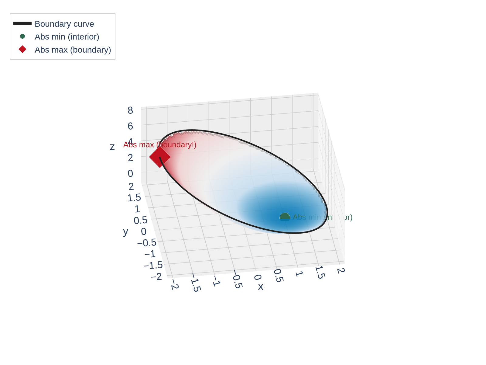
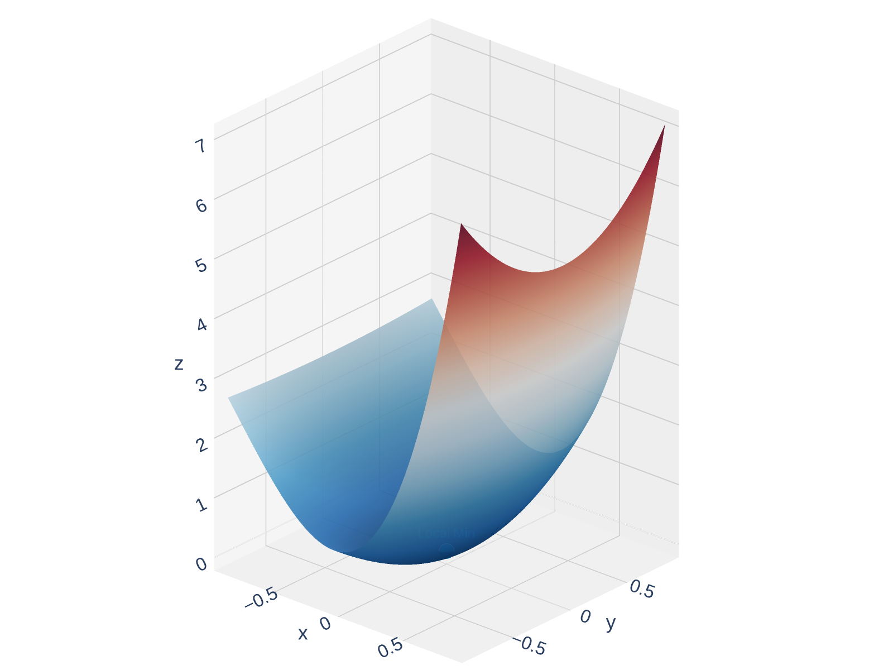
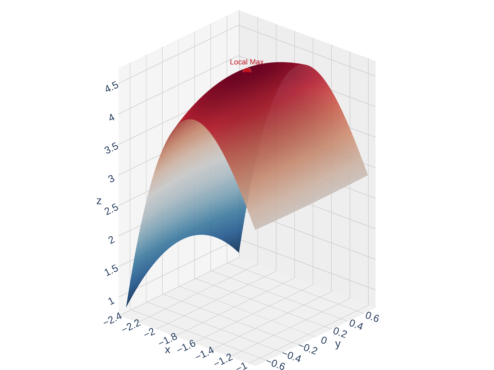
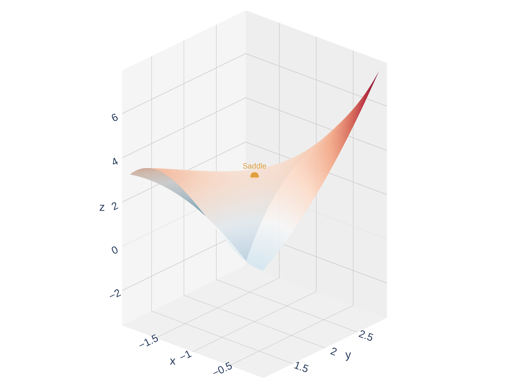

Section 14.7: Maximum and Minimum Values
Partial Derivatives
MTH 310
Calculus III
Local Extrema on Surfaces
Local Maximum and Minimum
A function \(f(x,y)\) has a local maximum at \((a,b)\) if \(f(x,y) \leq f(a,b)\) for all \((x,y)\) near \((a,b)\).
A local minimum at \((a,b)\) means \(f(x,y) \geq f(a,b)\) for all \((x,y)\) near \((a,b)\).
Can a differentiable function \(f\) have a local maximum at \((a,b)\) with \(f_x(a,b) = 3\)?
Theorem: Necessary Condition for Local Extrema
If \(f\) has a local extremum at \((a,b)\) and the first-order partial derivatives exist there, then
\[f_x(a,b) = 0 \quad \text{and} \quad f_y(a,b) = 0\]
Optimization: From Calc I to Calc III



Finding Critical Points
Critical Point
A point \((a,b)\) is a critical point of \(f\) if:
- \(f_x(a,b) = 0\) and \(f_y(a,b) = 0\), or
- one (or both) partial derivatives do not exist there
Procedure for finding critical points:
- Compute \(f_x\) and \(f_y\)
- Set \(f_x = 0\) and \(f_y = 0\) simultaneously
- Solve the system of equations for \(x\) and \(y\)
Example: Find the Critical Points
Example 1
Find the critical points of \(f(x,y) = 2x^3 + xy^2 + 5x^2 + y^2\).
The Second Derivative Test
Second Derivative Test
Suppose the second partial derivatives of \(f\) are continuous near \((a,b)\) and \(f_x(a,b) = f_y(a,b) = 0\). Define:
\[D = D(a,b) = f_{xx}(a,b) \cdot f_{yy}(a,b) - \left[f_{xy}(a,b)\right]^2\]



Quick Check: Use the Second Derivative Test
You've found a critical point and computed:
\[f_{xx} = -6, \quad f_{yy} = -4, \quad f_{xy} = 1\]
Compute \(D\) and classify. Local max, local min, or saddle?
Caution: When \(D = 0\)
Example 2
Show that \(D = 0\) at the origin for \(f(x,y) = x^4 + y^4\). Is \((0,0)\) actually an extremum?
Example: Classify the Critical Points
Example 3
Classify all critical points of \(f(x,y) = 2x^3 + xy^2 + 5x^2 + y^2\).
(We already found them: \((0,0)\), \((-\tfrac{5}{3}, 0)\), \((-1, 2)\), \((-1, -2)\).)
Your Turn: Find and Classify Critical Points
Example 4
Find and classify the critical points of \(f(x,y) = x^3 - 3xy + y^3\).
The Extreme Value Theorem
Extreme Value Theorem (Two Variables)
If \(f\) is continuous on a closed, bounded set \(D\) in \(\mathbb{R}^2\), then \(f\) attains an absolute maximum and an absolute minimum on \(D\).
Closed set: includes all its boundary points (like \(\leq\) vs. \(<\))
Bounded set: fits inside some large disk (not stretching to infinity)
Cautionary notes:
- Absolute extrema may occur where \(f\) is not differentiable
- Absolute extrema may occur on the boundary (not just interior critical points)
- There can be infinitely many absolute extrema
Quick Check: Why Check the Boundary?
Example: Absolute Extrema on a Rectangle
Example 5
Find the absolute maximum and minimum values of
\[f(x,y) = x^4 + y^4 - 4xy + 2\]
on the set \(D = \{(x,y) \mid 0 \leq x \leq 3,\; 0 \leq y \leq 2\}\).
Step 1: Interior critical points. Set \(f_x = 0\) and \(f_y = 0\):

\[f_x = 4x^3 - 4y = 0 \;\Rightarrow\; y = x^3\]
\[f_y = 4y^3 - 4x = 0 \;\Rightarrow\; x = y^3\]
Checking the Boundary (Continued)
Step 2: Check \(f\) on each edge of the rectangle \([0,3] \times [0,2]\).
Application: Minimum Surface Area Box
Example 6
Find the dimensions of a rectangular box with volume \(1000 \text{ cm}^3\) that has the smallest possible surface area.
Setup: Let the box have dimensions \(x\), \(y\), \(z\) (in cm).
- Constraint: \(xyz = 1000\) \(\Rightarrow\) \(z = \frac{1000}{xy}\)
- Minimize: \(S = 2xy + 2xz + 2yz\)